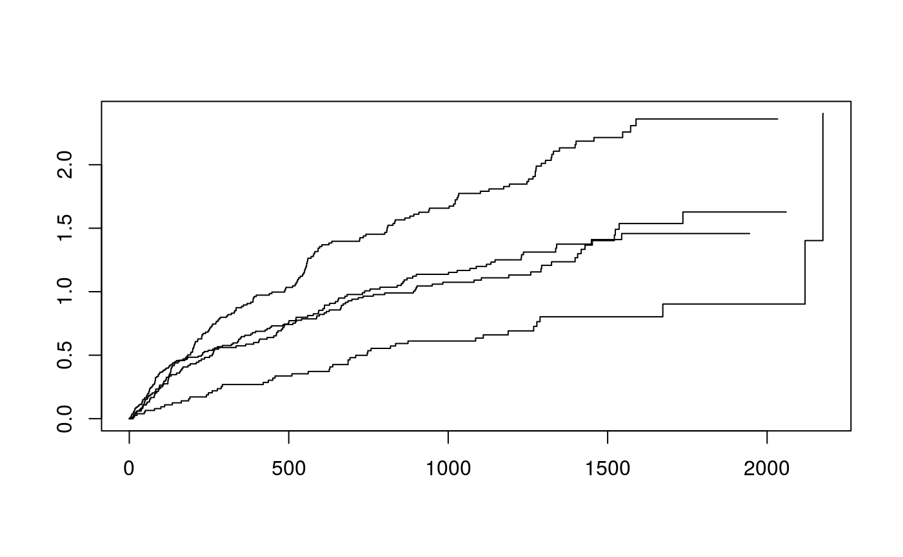
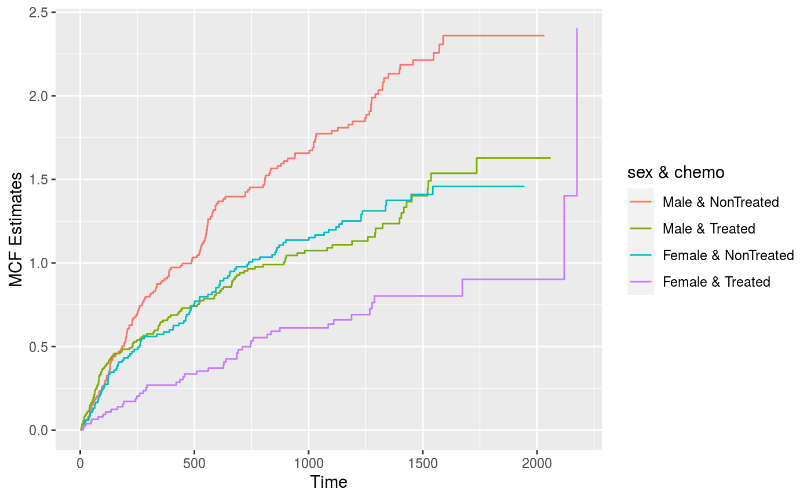

vignettes/reReg-plots.Rmd
reReg-plots.RmdIn this vignette, we demonstrate how to create a reSurv object in reReg package. The reSurv object is then used to create event plots and mean cumulative function (MCF) plots. We will illustrate the usage of our functions with the readmission data from the frailtypack package (Rondeau, Mazroui, and Gonzalez 2012, González Ruiz et al. (2005)). The data contains re-hospitalization times after surgery in patients diagnosed with colorectal cancer. In this data set, the recurrent event is the readmission and the terminal event is either death or end of study. See ?readmission for data details.
> library(reReg)
> packageVersion("reReg")[1] '1.3.1'> data(readmission, package = "frailtypack") > head(readmission)
id enum t.start t.stop time event chemo sex dukes charlson death
1 1 1 0 24 24 1 Treated Female D 3 0
2 1 2 24 457 433 1 Treated Female D 0 0
3 1 3 457 1037 580 0 Treated Female D 0 0
4 2 1 0 489 489 1 NonTreated Male C 0 0
5 2 2 489 1182 693 0 NonTreated Male C 0 0
6 3 1 0 15 15 1 NonTreated Male C 3 0> readmission <- subset(readmission, !(id %in% c(60, 109, 280))) > attach(readmission)
reSurv/Recur objectsThe reSurv() function is being deprecated in Version 1.2.0. A replacement of this function is the Recur() function imported from the reda package (Wang, Fu, and Yan 2017). We give some background on the reSurv() function and a brief introduction to the Recur() function here.
The usage of reSurv() is similar to the Surv() function in the survival package. There are five arguments in reSurv() but not all of them need to be specified. The arguments of reSurv() are as follow
> args(reSurv)
function (time1, time2, id, event, status, origin = 0)
NULLThe five arguments are as follows
time1 starting time for the gap time between two successive recurrent eventstime2 ending time for the gap time between two successive recurrent eventsid subject's idevent a vector used as the recurrent event indicator; event = 0 for non-recurrent times (such as the censoring times)status a binary vector used as the status indicator for the terminal event; status = 0 for censored timeorigin a numerical vector indicating the time origin of subjectsThe arguments of Recur() are similar to those of reSurv(). They are listed as follow
> args(Recur)
function (time, id, event, terminal, origin, check = c("hard",
"soft", "none"), ...)
NULLThe six arguments are as follows
time is a numerical vector representing the time of recurrence event or censoring, or a list with elements named time1 and time2 for specifying the follow-up of recurrent events. In the latter case, function %to% (or %2%) can be used to construct such list. In addition to numeric values, Date and difftime are allowed and converted to numeric values. An error will be thrown if this argument is not specified.id specifies the subject identity. It can be numeric vector, character vector, or a factor vector. If it is left unspecified, Recur() will assume that each row represents a subject.event is a numeric vector that represents the types of the recurrent events. Logical vector is allowed and converted to numeric vector. Non-positive values are internally converted to zero indicating censoring status.terminal is a numeric vector that represents the status of the terminal event. Logical vector is allowed and converted to numeric vector. Non-positive values are internally converted to zero indicating censoring status. If a scalar value is specified, all subjects will have the same status of terminal events at their last recurrent episodes. The length of the specified terminal should be equal to the number of subjects, or number of data rows. In the latter case, each subject may have at most one positive entry of terminal at the last recurrent episode.origin a numerical vector indicating the time origin of each subject. If a scalar value is specified, all subjects will have the same origin at the specified value. The length of the specified origin should be equal to the number of subjects, or number of data rows. In the latter case, different subjects may have different origins. However, one subject must have the same origin. In addition to numeric values, Date and difftime are also supported and converted to numeric values.check is a character value specifying how to perform the checks for recurrent event data. Errors or warnings will be thrown, respectively, if the check is specified to be "hard""’" (default) or "soft""’". If check = "none" is specified, no data checking procedure will be run.The main arguments of Recur() come directly from reSurv(), but Recur() comes with a comprehensive check for recurrent event data. Moreover, Recur() returns a S4 class object that can be used for functions in both the reReg package and the reda package. Readers are referred to a separate vignette on Recur() for a detailed introduction of Recur().
The Recur object can be constructed in the same way as an reSurv object. In the current version, the reSurv() function can still be used, but the reSurv object will be automatically transformed to the corresponding Recur object. For example:
> invisible(reSurv(t.stop, id, event, death))
Warning in reSurv(t.stop, id, event, death): 'reSurv()' is being deprecated in Version 1.1.7. Output is prepared by 'Recur()'.
See '?Recur()' for details.> identical(suppressWarnings(reSurv(t.stop, id, event, death)), Recur(t.stop, id, event, death))
[1] FALSEThe usage of Recur() is very similar to that of reSurv(), but the former is more flexible and offers much more features. In the following, we introduce different ways to create an Recur object. When the starting times and the ending times of recurrent events are known one can specify both times in Recur() as a list constructed by %to% (or its alias %2%).
> Recur(t.start %to% t.stop, id = id, event = event, status = death)
When the starting times are identical throughout subjects and are equal to zero, it is sufficient only to specify the end times in time.
> Recur(time = t.stop, id = id, event = event, status = death)
The identical Recur objects can be achieved without specifying the argument names:
> Recur(t.start %to% t.stop, id, event, death) > Recur(t.stop, id, event, death)
For each subject, the function Recur() prints intervals to represent the duration until the next event (a recurrent event or a terminal event).
> Recur(t.stop, id, event, death)
...
[1] 1: (0, 24], (24, 457], (457, 1037+]
[2] 2: (0, 489], (489, 1182+]
[3] 3: (0, 15], (15, 783*]
[4] 4: (0, 163], (163, 288], ..., (686, 2048+]
[5] 5: (0, 1134], (1134, 1144+]
[6] 6: (0, 627], (627, 1190], ..., (1406, 1407+]
[7] 7: (0, 38], (38, 42], ..., (63, 1049+]
[8] 8: (0, 1466*]
[9] 9: (0, 148], (148, 1474+]
[10] 10: (0, 1113+]
[11] 11: (0, 267], (267, 276], (276, 1635+]
[12] 12: (0, 1189+]
[13] 13: (0, 1028], (1028, 1207+]
[14] 14: (0, 1125+]
[15] 15: (0, 734], (734, 892], (892, 893*]
...The example above shows patient id #1 experienced 2 readmission with a terminal event at t = 1037 (days). The + at t = 1037 indicates the terminal time was censored, e.g., this patient did not experience the event of interest (death) at t = 1037. Similarly, patient id #3 has one readmission and died at t = 783 (days) as indicated by * at 783. On the other hand patient id # 4 has more than 3 readmissions and was censored at t = 2048 (days). The readmission intervals was suppressed to prevent printing results wider than the screen allowance. The number of intervals to be printed can be tuned using the options and argument reda.Recur.maxPrint. For example,
> options(reda.Recur.maxPrint = 6) > Recur(t.stop, id, event, death)
...
[1] 1: (0, 24], (24, 457], (457, 1037+]
[2] 2: (0, 489], (489, 1182+]
[3] 3: (0, 15], (15, 783*]
[4] 4: (0, 163], (163, 288], (288, 638], (638, 686], (686, 2048+]
[5] 5: (0, 1134], (1134, 1144+]
[6] 6: (0, 627], (627, 1190], (1190, 1406], (1406, 1407+]
[7] 7: (0, 38], (38, 42], (42, 63], (63, 1049+]
[8] 8: (0, 1466*]
[9] 9: (0, 148], (148, 1474+]
[10] 10: (0, 1113+]
[11] 11: (0, 267], (267, 276], (276, 1635+]
[12] 12: (0, 1189+]
[13] 13: (0, 1028], (1028, 1207+]
[14] 14: (0, 1125+]
[15] 15: (0, 734], (734, 892], (892, 893*]
...Event plots are a quick and easy way to glance at recurrent event data. These can be produced by plotting the Recur object with R's generic function plot(), shown in Figure 1.
> reObj <- Recur(t.stop, id, event, death) > plot(reObj)
Figure 1: Creating an event plot from a Recur object.
Common graphical options like xlab, ylab, main, and more can be directly passed down to plot().
> plot(reObj, cex = 1.5, xlab = "Time in days", ylab = "Patients", + main = "Event plot for readmission data", + terminal.name = "Death", + recurrent.name = "Hospital readmission")
Figure 2: Creating an event plot from a Recur object with custom labels.
Separate (stratified) event plots can be produced with the plotEvents function, which is a more specialized function for event plots. To demonstrate this, we first detach readmission.
> detach(readmission)
Unlike the generic plot function, plotEvents() uses a formula object to specify the stratification.
> args(plotEvents)
function (formula, data, result = c("increasing", "decreasing",
"asis"), control = list(), ...)
NULLHere are some examples to re-create Figure 1 with plotEvents():
> plotEvents(reObj) > plotEvents(reObj, data = readmission) > plotEvents(reObj ~ 1, data = readmission) > plotEvents(Recur(t.stop, id, event, death) ~ 1, data = readmission)
Figure 2 can be re-created with plotEvents in a similar fashion:
> plotEvents(Recur(t.stop, id, event, death) ~ 1, data = readmission, + cex = 1.5, xlab = "Time in days", ylab = "Patients", + main = "Event plot for readmission data", + terminal.name = "Death", recurrent.name = "Hospital readmission")
The plotEvents() function can also stratify event plots by groups. For example, the following can be used to stratify an event plot by sex.
> plotEvents(Recur(t.stop, id, event, death) ~ sex, data = readmission)
Figure 3: Event plot grouped by sex
Event plot by sex and chemo:
> plotEvents(Recur(t.stop, id, event, death) ~ sex + chemo, data = readmission)
Figure 4: Event plot grouped by sex and chemo.
The non-parametric mean cumulative function (MCF) can be used to aid event plots to determine visually whether a trend or other pattern exists. The MCF function is defined as follows: \[\begin{array}{c}
\hat \mu_n(t) = \int_0^tY_\cdot^{-1}(t)dN_\cdot(t),
\end{array}\] where \(Y_\cdot(t) = \sum_{i=1}^nY_i(t)\) is the total number of subjects who are at risk over \([t, t + dt)\) and \(dN_\cdot(t) = \sum_{i=1}^n dN_i(t)\) is the total number of events over the time interval [0, t]. This estimator is also known as the Nelson-Aalen estimator (Nelson 2003) and is also implemented in the mcf() function in the reda package (Wang, Fu, and Yan 2017). Another variation of the MCF function is discussed in (Cook and Lawless 2007) assuming \(Y_i(t) = n\) for all \(t\). This variation is equivalent to the Nelson-Aalen estimator without adjusting for risk set. We refer the Nelson-Aalen estimator and the Cook-Lawless estimator as the MCF function with (default) and without adjusting for risk set, respectively.
The MCF plot can be created with R's generic function plot(), shown in Figure 5.
> plot(reObj, mcf = TRUE)
Figure 5: Creating a MCF plot from a Recur object.
The MCF plot can be created with the more specialized function, plotMCF(). Both plotEvents() and plotMCF() return ggplot2 objects. A side-by-side MCF plot, showing the MCF functions with and without risk adjustment, is shown in Figure 6.
> library(gridExtra) > p1 <- plotMCF(Recur(t.stop, id, event, death) ~ 1, data = readmission, main = "") > p2 <- plotMCF(Recur(t.stop, id, event, death) ~ 1, data = readmission, + adjrisk = FALSE, main = "") > grid.arrange(p1, p2, ncol=2)
Figure 6: Creating a MCF plot from a Recur object.
As with the plotEvents(), plotMCF() can generate MCF plots given covariates. Figure 7 depicts the MCF plots grouped by sex.
> p1 <- plotMCF(Recur(t.stop, id, event, death) ~ sex, data = readmission, main = "") > p2 <- plotMCF(Recur(t.stop, id, event, death) ~ sex, data = readmission, + adjrisk = FALSE, main = "") > grid.arrange(p1, p2, ncol=2)
Figure 7: MCF plot grouped by sex.
As in plotEvents(), the more complicated Figure 8 depicts the MCF plots grouped by sex and chemo.
> plotMCF(Recur(t.stop, id, event, death) ~ sex + chemo, data = readmission, + onePanel = TRUE, main = "", base_size = 5, legend.position = "right")
Figure 8: MCF plots grouped by sex and chemo.
The same MCF plots can also be produced with the survfit() function from the survival package or the mcf() function from the reda package. The survival package gives:
> library(survival) > plot(survfit(Surv(t.start, t.stop, event) ~ sex + chemo, data = readmission, id = id), + cumhaz = TRUE)

On the other hand, the reda package gives:
> library(reda) > plot(mcf(Recur(t.stop, id, event, death) ~ sex + chemo, data = readmission))

The functions plotEvents() and plotMCF() can be used to accommodate recurrent event data with multiple recurrent types. To illustrate this, we generate hypothetical event types and store these in event2.
> set.seed(1) > readmission$event2 <- readmission$event * sample(1:3, 852, TRUE)
The plotEvents() and plotMCF() functions can still be applied when event is replaced by event2. Different recurrent events will be denoted by different colors and shapes.
> plotEvents(Recur(t.stop, id, event2, death) ~ sex, data = readmission, base_size = 8)
Figure 9: Event plots with multiple recurrent event types.
Default labels can be changed
> plotMCF(Recur(t.stop, id, event2, death) ~ sex, adjrisk = FALSE, data = readmission,
+ recurrent.name = "Event types", recurrent.type = c("Type 1", "Type 2", "Type 3"))Figure 10: MCF plot with multiple recurrent event types and customized labels.
> library(ggplot2) > p1 <- plotMCF(Recur(t.stop, id, event2, death) ~ sex, data = readmission, main = "") + + theme(legend.position="none") > p2 <- plotMCF(Recur(t.stop, id, event2, death) ~ sex, data = readmission, + adjrisk = FALSE, main = "") + + theme(legend.position="none") > grid.arrange(p1, p2, ncol = 2)
Figure 11: MCF plot with multiple recurrent event types.
Cook, Richard J, and Jerald Lawless. 2007. The Statistical Analysis of Recurrent Events. New York: Wiley.
González Ruiz, Juan Ramón, Esteve Fernández Muñoz, Víctor Moreno Aguado, Josepa Ribes Puig, Mercè Peris, Matilde Navarro, Maria Cambray i Amenós, and Borràs Andrés. 2005. “Sex Differences in Hospital Readmission Among Colorectal Cancer Patients.” Journal of Epidemiology and Community Health, 2005, Vol. 59, Núm. 6, P. 506-511. BMJ Group.
Nelson, Wayne B. 2003. Recurrent Events Data Analysis for Product Repairs, Disease Recurrences, and Other Applications. Vol. 10. SIAM.
Rondeau, Virginie, Yassin Mazroui, and Juan R Gonzalez. 2012. “Frailtypack: An R Package for the Analysis of Correlated Survival Data with Frailty Models Using Penalized Likelihood Estimation or Parametrical Estimation.” Journal of Statistical Software 47 (4): 1–28.
Wang, Wenjie, Haoda Fu, and Jun Yan. 2017. reda: Recurrent Event Data Analysis. https://CRAN.R-project.org/package=reda.